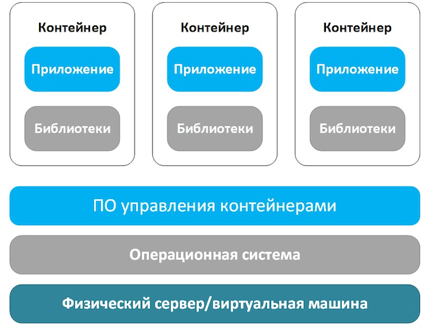
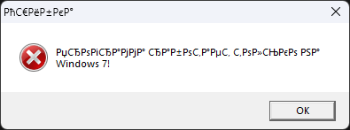

Что такое контейнеризация?
Контейнеризация — это технология, позволяющая запускать программное обеспечение в изолированной среде, включающей само приложение и все его зависимости. Она предоставляет гибкий и масштабируемый способ развёртывания ПО, при этом не требует полной виртуализации операционной системы.
Актуальность технологии
В условиях модернизации ИТ-инфраструктуры компаний часто возникает необходимость запускать устаревшее специализированное ПО в новых операционных системах. Использование традиционных подходов, таких как виртуальные машины, может быть ресурсоёмким и сложным в администрировании. Контейнеризация, напротив, позволяет достигнуть баланса между производительностью, удобством развёртывания и совместимостью.
Сравнение подходов
- Миграция на новую платформу: требует переписывания кода или замены ПО, зачастую невозможна из-за отсутствия исходников.
- Виртуальные машины: поддерживают старые ОС, но требуют много ресурсов и сложны в управлении.
- Контейнеризация: создаёт компактную и изолированную среду без эмуляции всей ОС.
Примеры решений
Для запуска старого Windows-приложения в современных условиях рассматривались такие подходы:
- Windows-контейнеры (Nano Server / Server Core) — ограниченная совместимость с Windows 7.
- WINE в контейнере на базе Linux — оптимальный вариант для большинства задач.
- Гибридный подход с использованием Windows Sandbox — подходит для ручного запуска, но не для масштабирования.
На практике наилучшие результаты показала связка Docker + WINE: запуск Windows-приложения в контейнере Ubuntu с графическим выводом через X-сервер (Xming).
Пошаговая реализация
1. Docker + WINE (запуск Windows-приложения в Linux)
- Установка Xming на хост-систему
- Установка Docker
- Создание контейнера:
docker run -it --name wine-container ubuntu bash
- Установка WINE и зависимостей:
dpkg --add-architecture i386 && apt update && apt install wine32:i386
- Копирование приложения:
docker cp release wine-container:/app/
- Настройка отображения:
export DISPLAY=host.docker.internal:0
- Настройка WINE:
winecfg
- Запуск приложения:
wine Test1.exe
2. LXC (изолированное окружение с Zabbix)
- Установка LXC:
sudo apt install lxc
- Создание контейнера с Ubuntu:
sudo lxc-create -n zabbix-container -t download
- Выбор образа (например, Ubuntu 20.04):
Distribution: ubuntu Release: focal Architecture: amd64
- Запуск контейнера:
sudo lxc-start -n zabbix-container -d
- Подключение к контейнеру:
sudo lxc-attach -n zabbix-container
- Установка Zabbix внутри контейнера:
apt update && apt install zabbix-agent

3. rkt (безопасный запуск API-сервиса)
- Установка rkt (на Ubuntu):
sudo apt install rkt
- Скачивание контейнерного образа:
rkt fetch docker://nginx
- Запуск контейнера с ограничениями:
rkt run docker://nginx \ --insecure-options=image \ --net=default \ --set-env=PORT=8080 - Создание systemd unit-файла (для автозапуска):
[Unit] Description=Secure rkt API Service [Service] ExecStart=/usr/bin/rkt run docker://myapp --net=default Restart=always - Активация systemd:
sudo systemctl enable myapp.service && sudo systemctl start myapp

Инструменты контейнеризации: сравнительная таблица
| Инструмент | Особенности | Преимущества | Недостатки |
|---|---|---|---|
| Docker | Простота, огромная экосистема | Быстрый старт, масштабируемость | Графика требует донастроек |
| LXC | Низкоуровневая интеграция с Linux | Гибкость, высокая производительность | Сложная настройка |
| rkt | Фокус на безопасность | Модульная структура | Меньше комьюнити, прекращена разработка |
Преимущества контейнеризации
- 📦 Минимизация зависимости от платформы
- ⚡ Быстрое и предсказуемое развертывание
- 🔄 Лёгкая интеграция в CI/CD
- 🧩 Возможность тестировать старое и новое ПО параллельно
- 📉 Снижение затрат на поддержку
Ограничения и вызовы
- ❗ Ограниченная поддержка GUI-приложений
- ❗ Возможные проблемы с лицензированием Windows-контейнеров
- ❗ Необходимость настройки X-сервера
- ❗ Некоторые приложения могут не работать в WINE
Выводы и перспективы
Контейнеризация — эффективное решение для запуска устаревшего ПО в современных условиях. Использование Docker и WINE предоставляет удобный способ обеспечить совместимость, сократить издержки и сохранить критически важную функциональность.
В перспективе возможно создание специализированных контейнеров с встроенной графикой и совместимостью Windows API. Также интерес представляет дальнейшая интеграция с Windows Sandbox.
Источники
- Docker Documentation
- WINE Application Database
- Microsoft Docs: Windows Containers
- Интернет Хостинг Центр: Что такое контейнеризация?
- Арьков В. – Виртуализация и контейнеризация